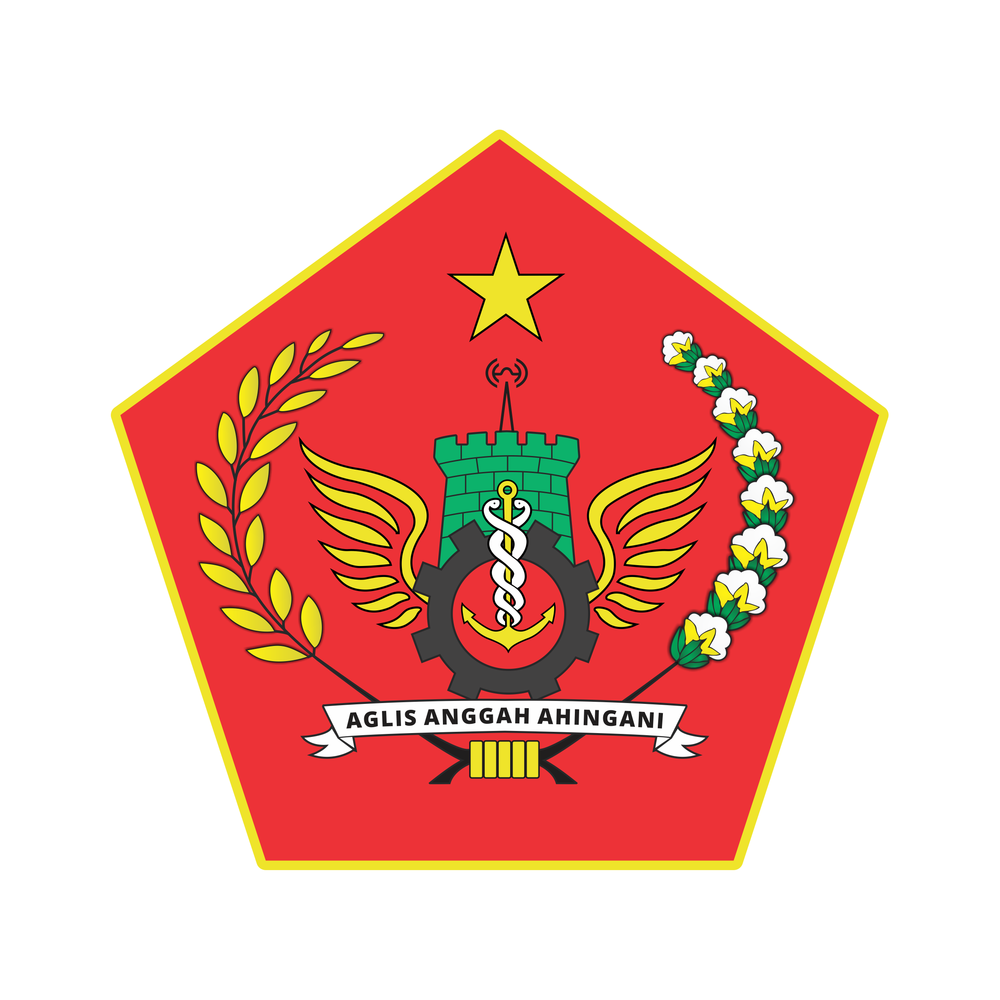

PUSADA MONITORING CENTER · GARDA
Production Questionnaire
Isi yang masih terbuka sebelum PRD Production dan implementation plan.
Cara pakai: baca rekomendasi, isi jawaban di tiap kotak, lalu tekan Copy Answers. Hasilnya bisa langsung di-copy ke chat. Jangan masukkan password, IP jaringan nyata, footage, data wajah, plat pribadi, atau informasi rahasia.
Keputusan yang sudah dicatat
- GARDA merekam sendiri; NVR menyimpan copy independen.
- Hot retention GARDA 7 hari; NVR/archive menyediakan availability 90 hari.
- PUSADA: 16 titik; jadwal internal minggu 1–10; support 12 minggu.
- Genset target owner 50 kVA; perlu klarifikasi tertulis terhadap angka KAK 500 kVA.
- GPU masih TBA. Tidak ada klaim kapasitas sebelum model dan benchmark dipilih.